Angelika
Cheng


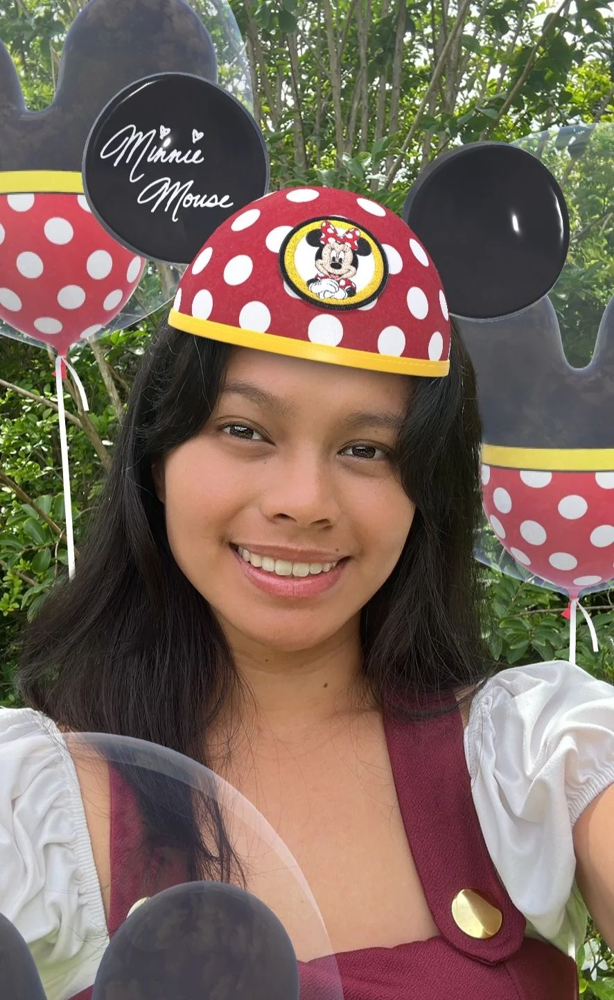
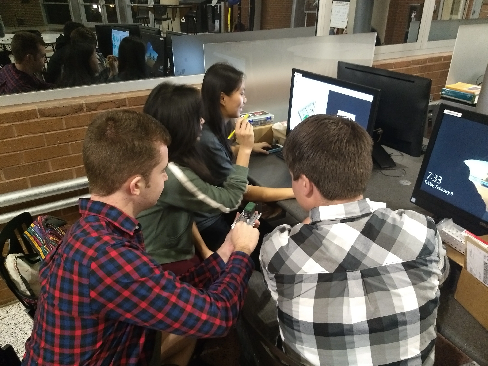

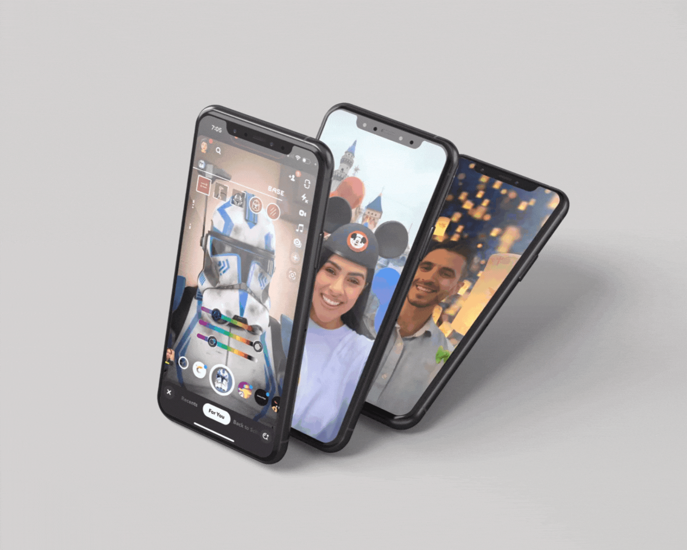
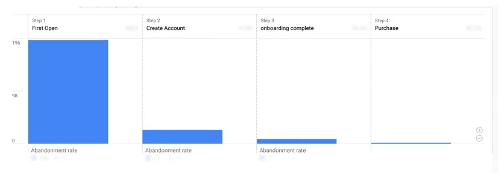
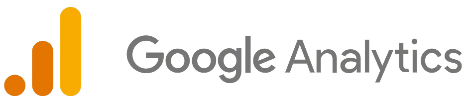
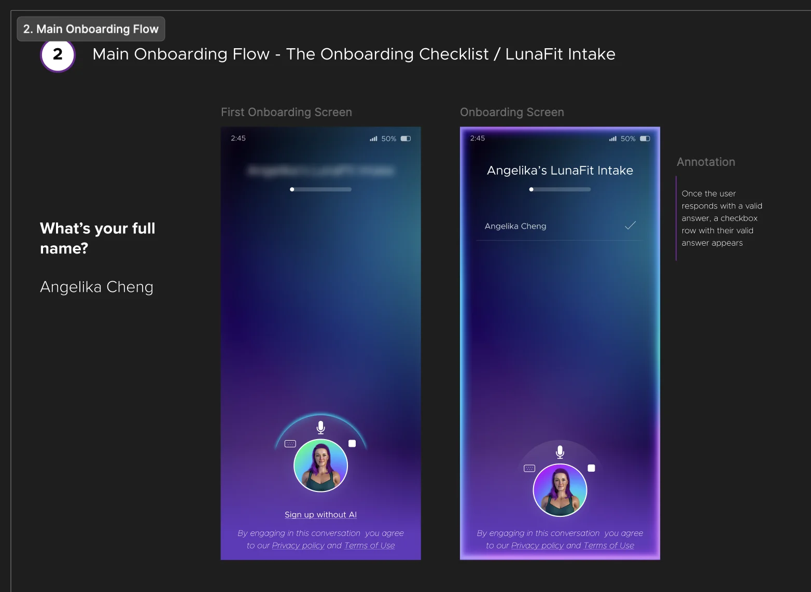
Onboarding required 17 data points upfront, with the biggest drop off before account creation.
Decision: Replaced it with a coach led, state driven dialogue that delivers value immediately and collects inputs over time.
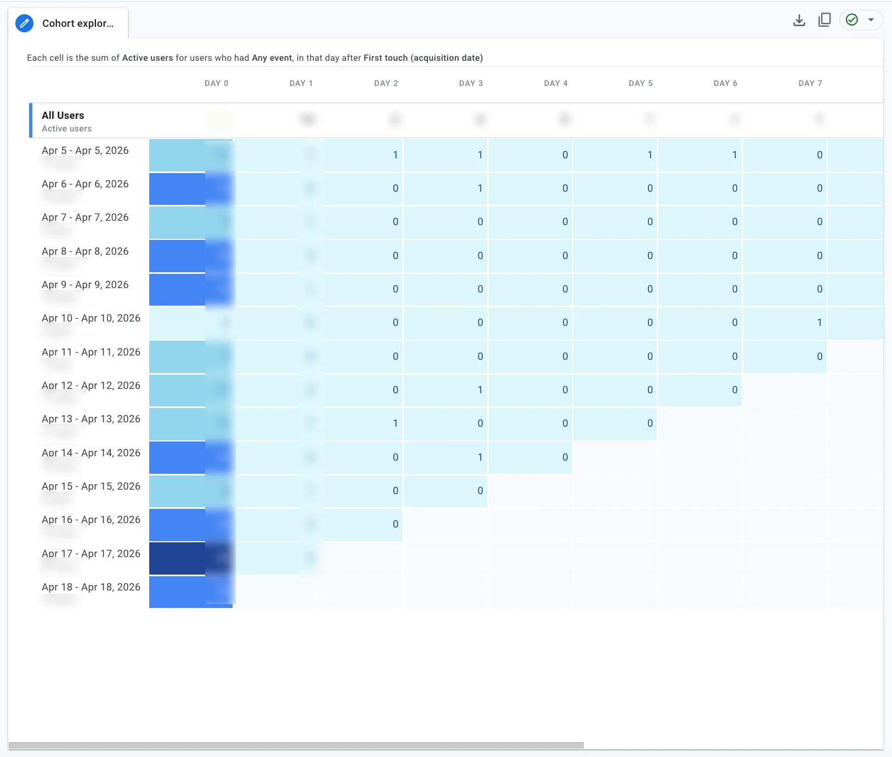
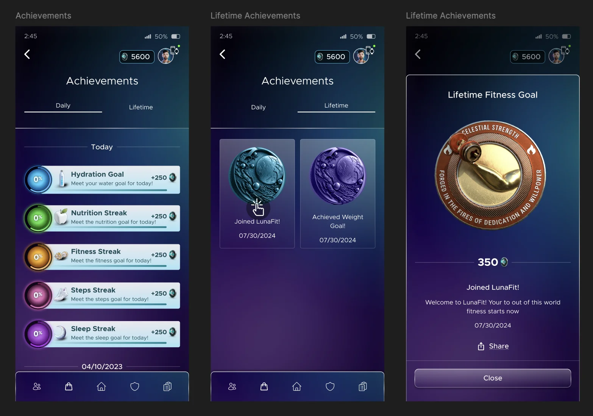
Retention dropped sharply between D1 and D3, with users disengaging after receiving their initial plan.
Decision: Introduced streaks, levels, and progression so each session feels like advancement. Early indicators showed lifts in D7 and D30 retention.

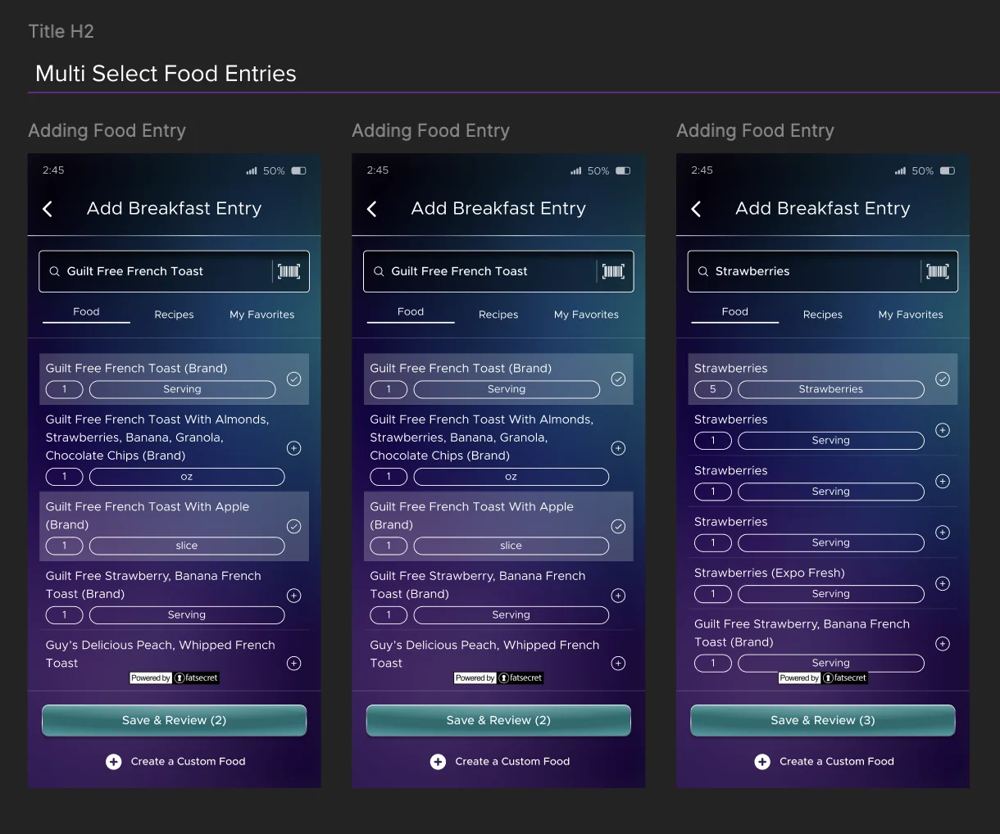
Studied leading nutrition apps and analyzed user feedback to understand friction in logging behaviors.
Decision: Upgraded logging to multi select, replacing one at a time input so tracking is faster and less interruptive.
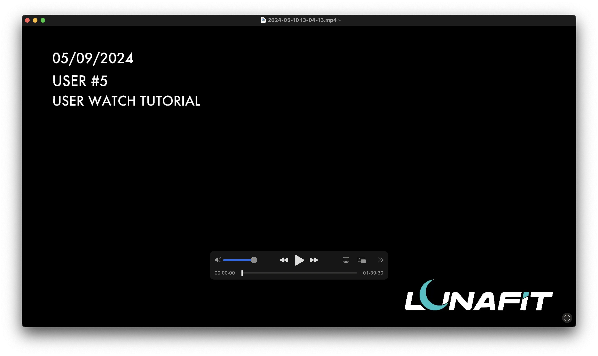
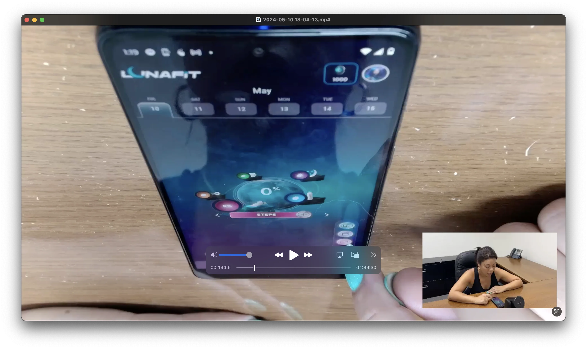
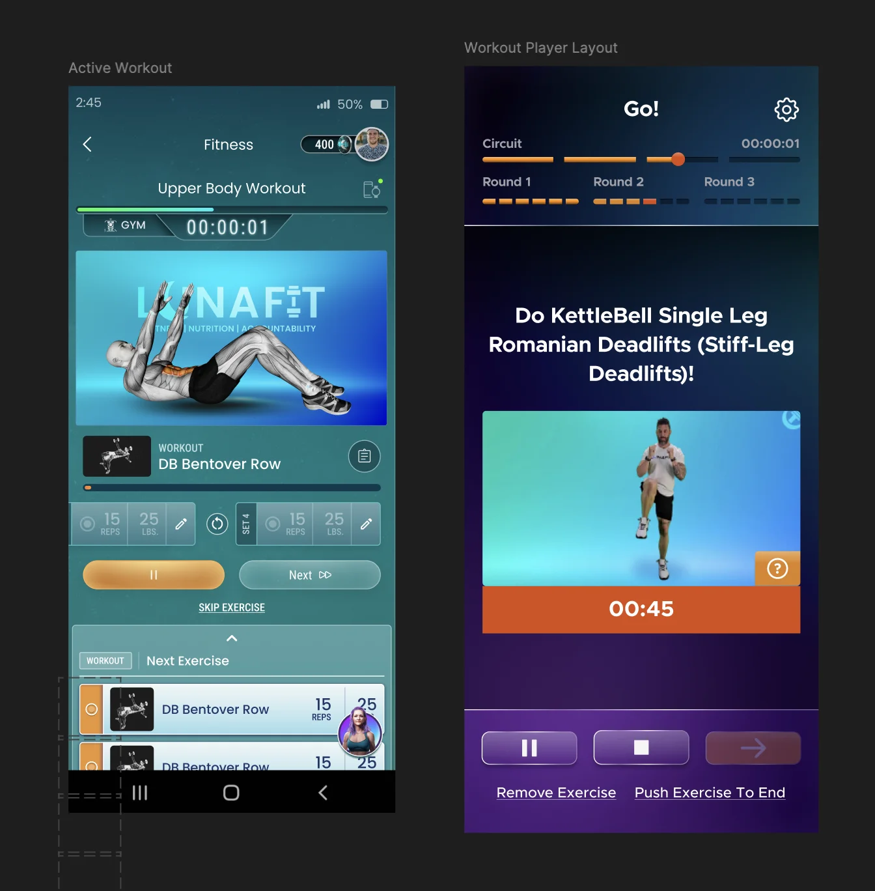
Observed a live workout with a user and saw frustration with the overwhelming, interruptive UI.
Decision: Simplified fitness into a workout player so sessions flow without friction and logging stays out of the way.
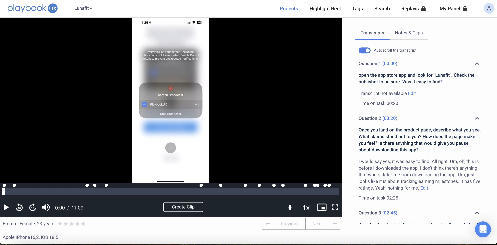
Mapped the full user journey and found that half of users were frustrated with excessive animations and unclear flow.
Decision: Reduced animations and clarified transitions so users can move through workouts, logging, and progress without confusion or delay.
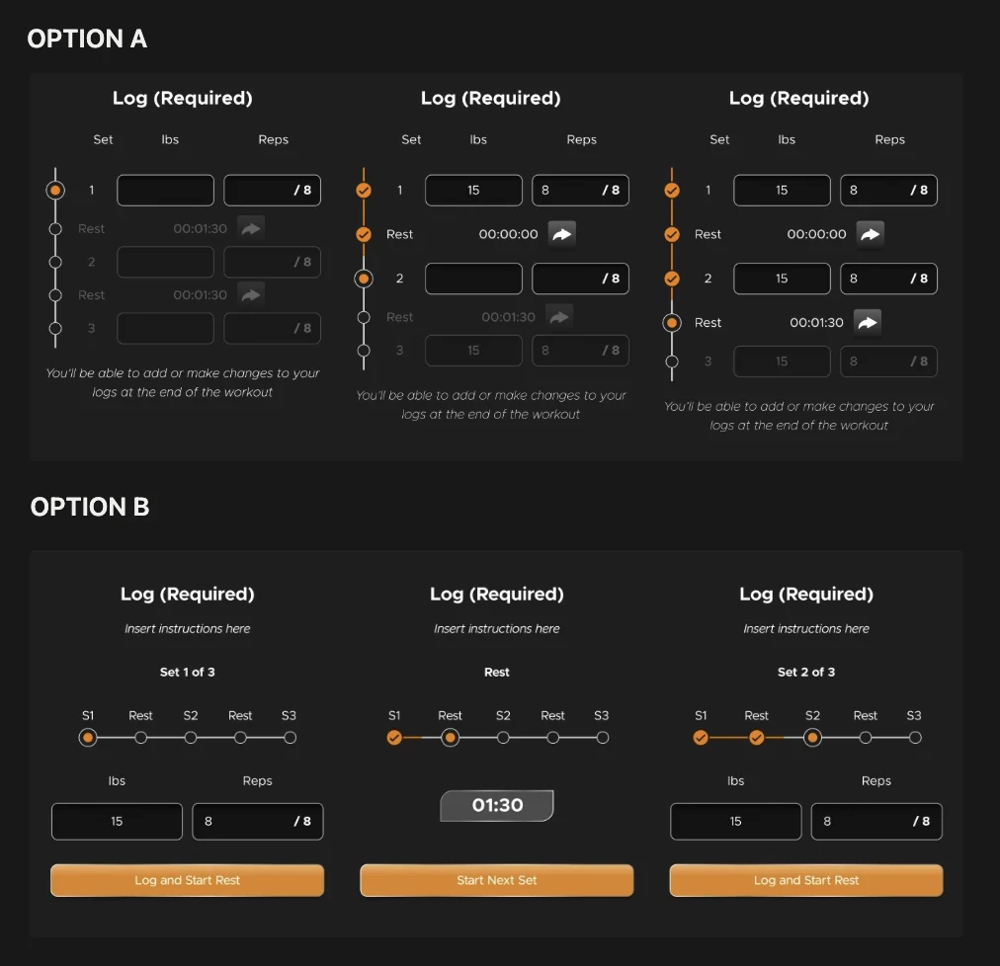
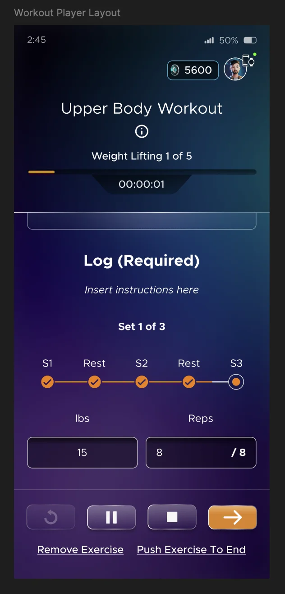
Ran a usability test to evaluate which weight logging UI felt more intuitive.
Decision: Shipped option B, with nearly 90% of users preferring it.


End-to-end brand, site and SEO system for an experiential hospitality concept.
Portfolio of Orlando cafe concepts, brand, atmosphere and in-space experience design.

Ecommerce marketplace storefront for LunaFit, product discovery and checkout flows.
Studio 03, full brand and motion identity system.

to help me improve my interviewing skills?